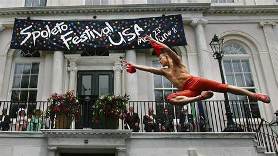
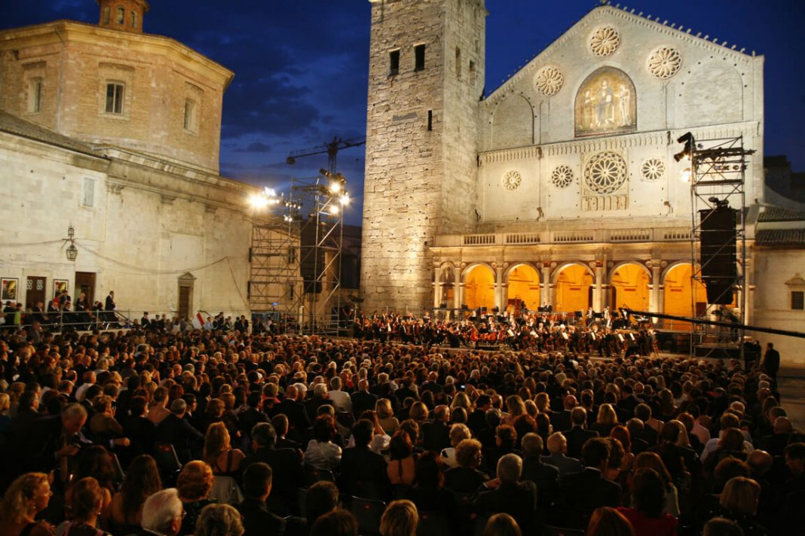
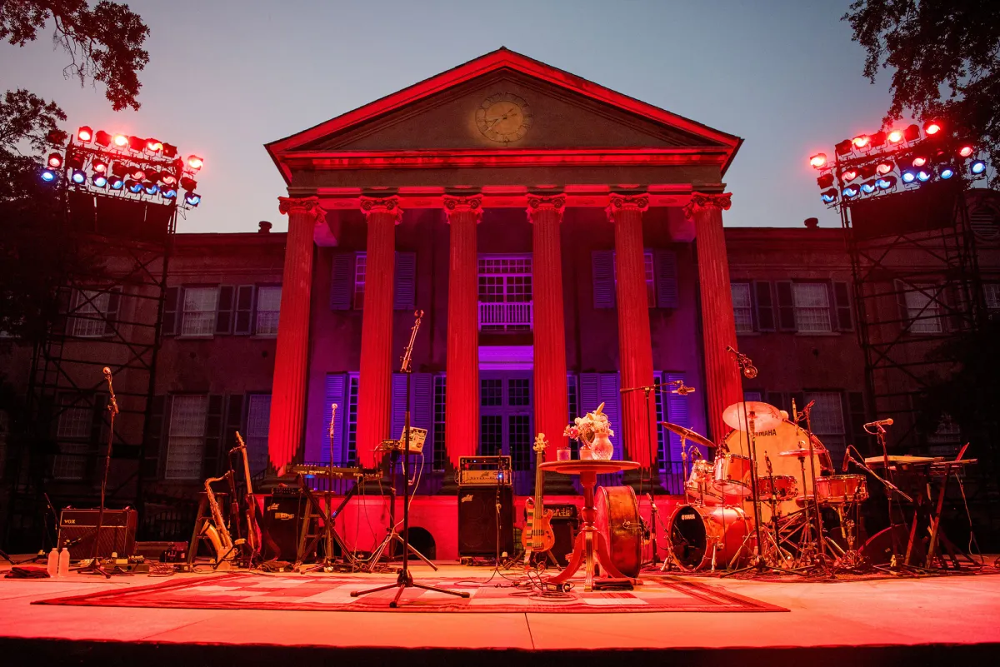
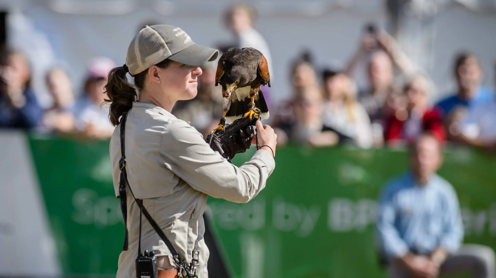

Enriching experiences await!
The Spoleto Festival USA, founded in 1977 by composer Gian Carlo Menotti, has become a hallmark of Charleston's cultural landscape. Inspired by Italy's Spoleto Festival dei Due Mondi, Menotti envisioned an event that would showcase a diverse array of performing arts, from opera and theater to dance and music. The inaugural festival featured an eclectic mix of performances, drawing artists and audiences from across the globe. Over the years, Spoleto has grown in prominence, attracting renowned talent and fostering new works while emphasizing collaboration and innovation. The festival not only celebrates the arts but also revitalizes Charleston’s historic venues, making them vibrant spaces for creativity. Today, Spoleto Festival USA remains a significant cultural event, enriching the community and highlighting Charleston as a destination for the arts.
  Wildlife and the Arts
The Southeastern Wildlife Expo (SEWE), established in 1983, is a premier celebration of wildlife and nature, held annually in Charleston, South Carolina. Founded by a group of outdoor enthusiasts and conservationists, SEWE was created to promote wildlife conservation, education, and appreciation of the natural world. The festival features a diverse array of events, including art exhibitions, wildlife demonstrations, and educational seminars, all centered around the themes of conservation and outdoor recreation. Over the years, SEWE has grown significantly, attracting thousands of visitors and showcasing the talents of artists, chefs, and wildlife experts. The event not only highlights the region's rich natural resources but also raises funds for conservation efforts, making it a vital platform for both education and community engagement in preserving the Southeastern ecosystem. Today, SEWE is a beloved tradition in Charleston, drawing attention to the beauty and importance of wildlife in our lives.
